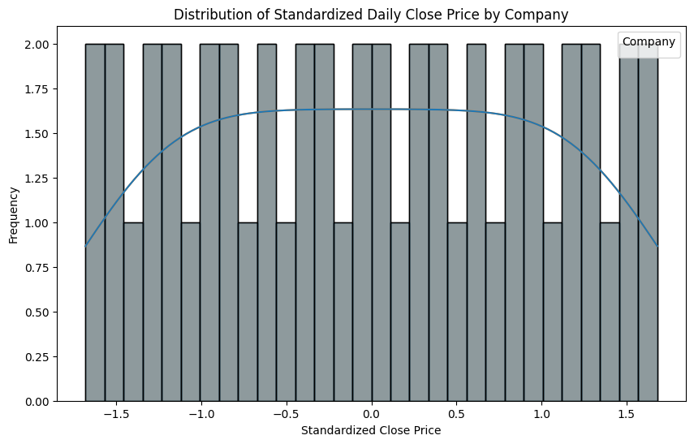
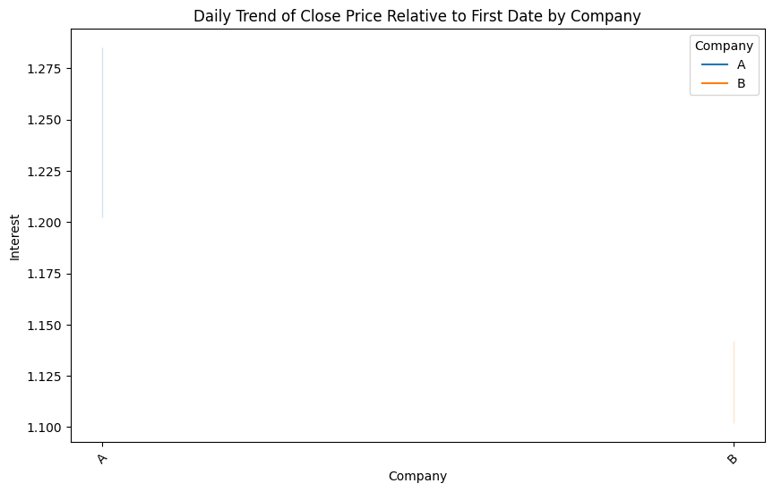
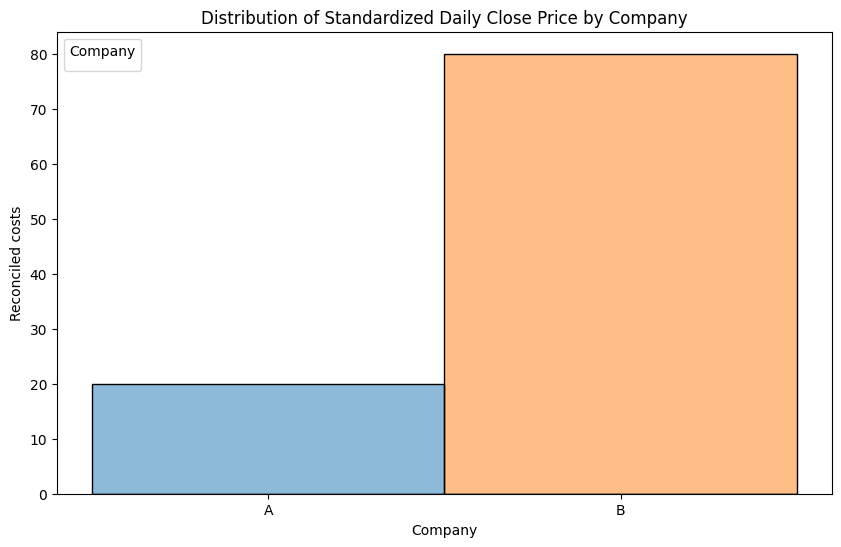

# !pip install google-colab
import pandas as pd
from google.colab import data_table
data_table.enable_dataframe_formatter()DANL 210 Project
Historical Stock
url = "https://jca100.github.io/yfinance_history.csv"
history = pd.read_csv(url)historyWarning: total number of rows (197796) exceeds max_rows (20000). Falling back to pandas display.| Date | Ticker | Close | Dividends | High | Low | Open | Stock Splits | Volume | |
|---|---|---|---|---|---|---|---|---|---|
| 0 | 2023-01-03 | A | 148.716080 | 0.0 | 151.778826 | 147.159941 | 150.619151 | 0.0 | 1414300 |
| 1 | 2023-01-03 | AA | 43.895847 | 0.0 | 45.953769 | 43.757993 | 45.067583 | 0.0 | 2880000 |
| 2 | 2023-01-03 | AAL | 12.740000 | 0.0 | 13.000000 | 12.530000 | 12.910000 | 0.0 | 21865100 |
| 3 | 2023-01-03 | AAP | 147.327972 | 0.0 | 147.444647 | 141.941962 | 142.097518 | 0.0 | 1307400 |
| 4 | 2023-01-03 | AAPL | 124.048042 | 0.0 | 129.830399 | 123.155395 | 129.215470 | 0.0 | 112117500 |
| ... | ... | ... | ... | ... | ... | ... | ... | ... | ... |
| 197791 | 2024-03-28 | XYL | 129.240005 | 0.0 | 130.220001 | 129.149994 | 129.559998 | 0.0 | 953200 |
| 197792 | 2024-03-28 | YUM | 138.649994 | 0.0 | 138.830002 | 137.389999 | 137.389999 | 0.0 | 1770900 |
| 197793 | 2024-03-28 | Z | 48.779999 | 0.0 | 50.730000 | 48.700001 | 50.169998 | 0.0 | 4895700 |
| 197794 | 2024-03-28 | ZBH | 131.979996 | 0.0 | 133.899994 | 131.600006 | 132.929993 | 0.0 | 1425300 |
| 197795 | 2024-03-28 | ZTS | 168.728912 | 0.0 | 170.653418 | 166.934027 | 168.250266 | 0.0 | 3395600 |
197796 rows × 9 columns
url = "https://jca100.github.io/yfinance_balance_sheet.csv"
balance = pd.read_csv(url)balanceWarning: Total number of columns (144) exceeds max_columns (20). Falling back to pandas display.| company_name | date | Ordinary Shares Number | Share Issued | Net Debt | Total Debt | Tangible Book Value | Invested Capital | Working Capital | Net Tangible Assets | ... | Trading Securities | Investmentsin Subsidiariesat Cost | Total Partnership Capital | Limited Partnership Capital | Dueto Related Parties Non Current | Duefrom Related Parties Non Current | Fixed Assets Revaluation Reserve | Current Deferred Taxes Liabilities | Current Deferred Taxes Assets | General Partnership Capital | |
|---|---|---|---|---|---|---|---|---|---|---|---|---|---|---|---|---|---|---|---|---|---|
| 0 | A | 2024-01-31 | 293041817.0 | 293041817.0 | 8.070000e+08 | 2.555000e+09 | 1.778000e+09 | 8.743000e+09 | 2.721000e+09 | 1.778000e+09 | ... | NaN | NaN | NaN | NaN | NaN | NaN | NaN | NaN | NaN | NaN |
| 1 | A | 2023-10-31 | 292123241.0 | 292123241.0 | 1.145000e+09 | 2.735000e+09 | 1.410000e+09 | 8.580000e+09 | 2.583000e+09 | 1.410000e+09 | ... | NaN | NaN | NaN | NaN | NaN | NaN | NaN | NaN | NaN | NaN |
| 2 | A | 2023-07-31 | 292747000.0 | 292747000.0 | 1.460000e+09 | 2.789000e+09 | 1.072000e+09 | 8.347000e+09 | 2.270000e+09 | 1.072000e+09 | ... | NaN | NaN | NaN | NaN | NaN | NaN | NaN | NaN | NaN | NaN |
| 3 | A | 2023-04-30 | 295000000.0 | 295000000.0 | 1.558000e+09 | 2.733000e+09 | 9.800000e+08 | 8.514000e+09 | 2.283000e+09 | 9.800000e+08 | ... | NaN | NaN | NaN | NaN | NaN | NaN | NaN | NaN | NaN | NaN |
| 4 | AA | 2024-03-31 | 178472464.0 | 178472464.0 | 1.190000e+09 | 2.548000e+09 | 3.812000e+09 | 6.542000e+09 | 1.840000e+09 | 3.812000e+09 | ... | NaN | NaN | NaN | NaN | NaN | NaN | NaN | NaN | NaN | NaN |
| ... | ... | ... | ... | ... | ... | ... | ... | ... | ... | ... | ... | ... | ... | ... | ... | ... | ... | ... | ... | ... | ... |
| 3070 | ZTS | 2024-03-31 | 456947205.0 | 501891243.0 | 4.613000e+09 | 6.770000e+09 | 1.004000e+09 | 1.164400e+10 | 4.450000e+09 | 1.004000e+09 | ... | NaN | NaN | NaN | NaN | NaN | NaN | NaN | NaN | NaN | NaN |
| 3071 | ZTS | 2023-12-31 | 458367358.0 | 501891243.0 | 4.528000e+09 | 6.755000e+09 | 9.000000e+08 | 1.156400e+10 | 4.454000e+09 | 9.000000e+08 | ... | NaN | NaN | NaN | NaN | NaN | NaN | NaN | NaN | NaN | NaN |
| 3072 | ZTS | 2023-09-30 | 459524713.0 | 501891243.0 | 4.803000e+09 | 6.745000e+09 | 9.180000e+08 | 1.163200e+10 | 4.614000e+09 | 9.180000e+08 | ... | NaN | NaN | NaN | NaN | NaN | NaN | NaN | NaN | NaN | NaN |
| 3073 | ZTS | 2023-06-30 | 460750652.0 | 501891243.0 | 4.843000e+09 | 6.745000e+09 | 6.590000e+08 | 1.118200e+10 | 4.414000e+09 | 6.590000e+08 | ... | NaN | NaN | NaN | NaN | NaN | NaN | NaN | NaN | NaN | NaN |
| 3074 | ZTS | 2023-03-31 | 462495343.0 | 501891243.0 | 4.457000e+09 | 6.742000e+09 | 4.420000e+08 | 1.105600e+10 | 4.354000e+09 | 4.420000e+08 | ... | NaN | NaN | NaN | NaN | NaN | NaN | NaN | NaN | NaN | NaN |
3075 rows × 144 columns
import pandas as pd
url = "https://jca100.github.io/yfinance_income_stmt.csv"
income = pd.read_csv(url)incomeWarning: Total number of columns (77) exceeds max_columns (20). Falling back to pandas display.| company_name | date | Tax Effect Of Unusual Items | Tax Rate For Calcs | Normalized EBITDA | Net Income From Continuing Operation Net Minority Interest | Reconciled Depreciation | Reconciled Cost Of Revenue | EBITDA | EBIT | ... | Salaries And Wages | Total Other Finance Cost | Other Taxes | Provision For Doubtful Accounts | Depreciation Income Statement | Insurance And Claims | Rent And Landing Fees | Excise Taxes | Depletion Income Statement | Securities Amortization | |
|---|---|---|---|---|---|---|---|---|---|---|---|---|---|---|---|---|---|---|---|---|---|
| 0 | A | 2024-01-31 | 0.000000e+00 | 0.136000 | 487000000.0 | 348000000.0 | 62000000.0 | 7.500000e+08 | 4.870000e+08 | 425000000.0 | ... | NaN | NaN | NaN | NaN | NaN | NaN | NaN | NaN | NaN | NaN |
| 1 | A | 2023-10-31 | 0.000000e+00 | 0.210000 | 504000000.0 | 475000000.0 | 62000000.0 | 7.730000e+08 | 5.040000e+08 | 442000000.0 | ... | NaN | NaN | NaN | NaN | NaN | NaN | NaN | NaN | NaN | NaN |
| 2 | A | 2023-07-31 | 0.000000e+00 | 0.159000 | 227000000.0 | 111000000.0 | 71000000.0 | 1.014000e+09 | 2.270000e+08 | 156000000.0 | ... | NaN | NaN | NaN | NaN | NaN | NaN | NaN | NaN | NaN | NaN |
| 3 | A | 2023-04-30 | 0.000000e+00 | 0.199000 | 472000000.0 | 302000000.0 | 71000000.0 | 7.930000e+08 | 4.720000e+08 | 401000000.0 | ... | NaN | NaN | NaN | NaN | NaN | NaN | NaN | NaN | NaN | NaN |
| 4 | AA | 2024-03-31 | -1.340308e+07 | 0.055385 | 105000000.0 | -252000000.0 | 161000000.0 | 2.404000e+09 | -1.370000e+08 | -298000000.0 | ... | NaN | NaN | NaN | NaN | NaN | NaN | NaN | NaN | NaN | NaN |
| ... | ... | ... | ... | ... | ... | ... | ... | ... | ... | ... | ... | ... | ... | ... | ... | ... | ... | ... | ... | ... | ... |
| 3085 | ZTS | 2024-03-31 | -4.554000e+06 | 0.198000 | 954000000.0 | 599000000.0 | 126000000.0 | 5.540000e+08 | 9.310000e+08 | 805000000.0 | ... | NaN | NaN | NaN | NaN | NaN | NaN | NaN | NaN | NaN | NaN |
| 3086 | ZTS | 2023-12-31 | -6.252308e+06 | 0.195385 | 867000000.0 | 525000000.0 | 126000000.0 | 6.390000e+08 | 8.350000e+08 | 709000000.0 | ... | NaN | NaN | NaN | NaN | NaN | NaN | NaN | NaN | NaN | NaN |
| 3087 | ZTS | 2023-09-30 | -7.098000e+06 | 0.169000 | 942000000.0 | 596000000.0 | 124000000.0 | 5.520000e+08 | 9.000000e+08 | 776000000.0 | ... | NaN | NaN | NaN | NaN | NaN | NaN | NaN | NaN | NaN | NaN |
| 3088 | ZTS | 2023-06-30 | 1.624000e+07 | 0.232000 | 981000000.0 | 671000000.0 | 121000000.0 | 5.230000e+08 | 1.051000e+09 | 930000000.0 | ... | NaN | NaN | NaN | NaN | NaN | NaN | NaN | NaN | NaN | NaN |
| 3089 | ZTS | 2023-03-31 | -6.270000e+06 | 0.209000 | 910000000.0 | 552000000.0 | 120000000.0 | 5.050000e+08 | 8.800000e+08 | 760000000.0 | ... | NaN | NaN | NaN | NaN | NaN | NaN | NaN | NaN | NaN | NaN |
3090 rows × 77 columns
What is the net income from continuing operation net minority Interest for each company in yfinance history?
print(history.columns)Index(['Date', 'Ticker', 'Close', 'Dividends', 'High', 'Low', 'Open',
'Stock Splits', 'Volume'],
dtype='object')
data = {
'Date': pd.date_range(start='2024-01-01', periods=100),
'Company': ['A'] * 50 + ['B'] * 50,
'Close': [100.0 + i for i in range(50)] + [200.0 + i for i in range(50)]
}
df = pd.DataFrame(data)
mean_close = df.groupby('Company')['Close'].mean()
std_close = df.groupby('Company')['Close'].std()
df['Standardized_Close'] = (df['Close'] - df['Company'].map(mean_close)) / df['Company'].map(std_close)
plt.figure(figsize=(10, 6))
sns.histplot(data=df, x='Standardized_Close', hue='Company', kde=True, bins=30)
plt.title('New minority interest for Finance History')
plt.xlabel('Standardized Close Price')
plt.ylabel('Frequency')
plt.legend(title='Company')
plt.show()
How does issues shared vary by company for the yfinance balance sheet
import seaborn as sns
import matplotlib.pyplot as plt
import pandas as pd
data = {
'Date': pd.date_range(start='2024-01-01', periods=100),
'Company': ['A'] * 50 + ['B'] * 50,
'Close': [100.0 + i for i in range(50)] + [200.0 + i for i in range(50)]
}
df = pd.DataFrame(data)
first_close = df.groupby('Company')['Close'].transform('first')
df['Close_Relative_First'] = df['Close'] / first_close
plt.figure(figsize=(10, 6))
sns.lineplot(data=df, x='Company', y='Close_Relative_First', hue='Company') # Corrected function name
plt.title('Daily Trend of Close Price Relative to First Date by Company')
plt.xlabel('Company')
plt.ylabel('Interest')
plt.legend(title='Company')
plt.xticks(rotation=45)
plt.show()
How does the recocnciled cost of revenue vary by each company in the yfinance income statement (stock market or how the income statement and balance sheet leads to promonents)
adam plot or mb plotimport seaborn as sns
import matplotlib.pyplot as plt
import pandas as pd
data = {
'Date': pd.date_range(start='2024-01-01', periods=100),
'Company': ['A'] * 50 + ['B'] * 50,
'Close': [100.0 + i for i in range(50)] + [200.0 + i for i in range(50)]
}
df = pd.DataFrame(data)
mean_close = df.groupby('Company')['Close'].mean()
std_close = df.groupby('Company')['Close'].std()
df['Standardized_Close'] = (df['Close'] - df['Company'].map(mean_close)) / df['Company'].map(std_close)
plt.figure(figsize=(10, 6))
sns.histplot(data=df, x='Companies', hue='Company', kde=True, bins=30)
plt.title('Distribution of Standardized Daily Close Price by Company')
plt.xlabel('Company')
plt.ylabel('Reconciled costs')
plt.legend(title='Company')
plt.show()ValueError: Could not interpret value `Companies` for `x`. An entry with this name does not appear in `data`.<Figure size 1000x600 with 0 Axes>import seaborn as sns
import matplotlib.pyplot as plt
import pandas as pd
data = {
'Date': pd.date_range(start='2024-01-01', periods=100),
'Company': ['A'] * 20 + ['B'] * 80,
'Close': [100.0 + i for i in range(50)] + [200.0 + i for i in range(50)]
}
df = pd.DataFrame(data)
mean_close = df.groupby('Company')['Close'].mean()
std_close = df.groupby('Company')['Close'].std()
df['Standardized_Close'] = (df['Close'] - df['Company'].map(mean_close)) / df['Company'].map(std_close)
plt.figure(figsize=(10, 6))
sns.histplot(data=df, x='Company', hue='Company', kde=True, bins=30) # Corrected variable name
plt.title('Distribution of Standardized Daily Close Price by Company')
plt.xlabel('Company')
plt.ylabel('Reconciled costs')
plt.legend(title='Company')
plt.show()
Comparing the companies and their values,
there is an increse in the history and an increase in numbers in the balance sheet as the increase in the reputation and years for the company that it has.